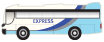

home > 이용정보 > 교통정보
교통정보
찾아오시는길
대중교통
- 01지하철 이용
- 분당선 기흥역까지 오셔서 에버라인(경전철)으로 환승하세요!
- - 에버라인 종점에 내려서 셔틀버스(무료)로 에버랜드, 캐리비안 베이까지 이동
- 에버라인 운행시간 05:30~23:30
- 02버스 이용
- ▣서울출발
- 일반버스
- 5002번 신논현역 – 강남역 - 양재역 경유
- 5700번 강변역 - 잠실역 – 송파역 - 수서역 경유
- 1500-2번 사당역 - 남부터미널 – 판교역 - 분당(서현역) 경유
- 1113번 강변역 - 강동역 – 광주시청 - 외대입구 경유
-
- ▣인천 및 경기도 출발
- 직행버스
- 8862번 인천터미널 - 수원영통
- 8839번 인천터미널 - 범계역
- 일반버스
- 66번 수원역 – 수원 – 용인 경유
- 66-4번 수원역 – 수원 – 동백 – 용인 경유
- 670번 광교 – 수지 – 죽전 – 동백 경유